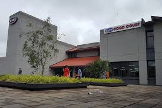

HI! HELLO! WELCOME TO SKCT
Sri Krishna College of Technology [SKCT] is one of the well-known institutes which was established in the year 1985 and is located in Coimbatore, Tamil Nadu. The institute offers various Degree courses including 11 UG and 7 PG programs. Programs are offered in Full Time mode, and are delivered by highly experienced faculty. Students can pursue education in multiple courses like B.E. / B.Tech, MCA, MBA/PGDM, M.E./M.Tech in the stream of Engineering, IT & Software, Business & Management Studies. Sri Krishna College of Technology [SKCT] provides students with the opportunity to learn from skilled and experienced faculty members who specialize in the fields of Instrumentation Technology, Electronics Engineering, Computer Science Engineering, Power Engineering, Structural Engineering, Artificial Intelligence & Machine Learning, Civil Engineering, Electrical Engineering, Electronics & Communication Engineering, Information Technology, Mechanical Engineering. The institute's courses are approved by the AICTE, etc, and are accessible to candidates seeking quality education at an affordable fee. With 1455 seats, students have the opportunity to acquire knowledge and skills in their desired field. The fee for the courses offered by the institute ranges between INR 35,000-200,000. Sri Krishna College of Technology [SKCT] also offers excellent infrastructure facilities.

For more info Click here!!!
CAMPUS LIFE
Cafeteria
A Cafeteria is functioning in the campus for the benefit of students & staff. There are four other smaller cafes and refreshment outlets inside the campus. Spacious, airy & trendy cafeteria offers ample scope for students to break free from their strenuous schedules and enjoy appetizing food in an extremely casual yet pleasant ambience. Quality vegetarian and non-vegetarian food prepared in a hygienic environment are provided in the Cafeteria.
Sports